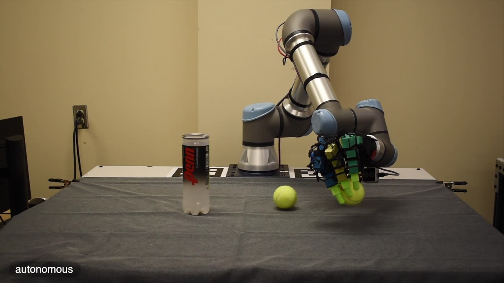
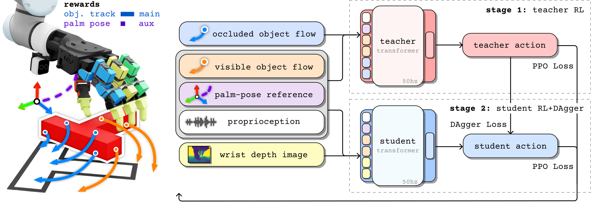

Learning Embodiment-Agnostic Intent Models from Unstructured Human Videos for Scalable Dexterous Robot Skill Acquisition
†Corresponding author · *Equal advising

The most widely-adopted robot learning pipelines today learn skills from robot demonstrations or structured human data, which are expensive to collect and tied to specific embodiments. In contrast, unstructured human videos provide a scalable alternative. They contain diverse manipulation demonstrations across objects, scenes, and strategies, but are not directly connected to robot action. We propose LUCID, a two-stage framework that learns task intent from unstructured human videos drawn from internet-scale datasets and learns robot control in massively-parallel simulation. The intent model predicts short-horizon intent (what should happen next in the scene) from the current observation in closed loop. An embodiment-specific sensorimotor policy converts this intent into robot actions. The intent interface is shared across controllers, so the same intent model can be applied to different embodiments, from our primary dexterous hand to a parallel-jaw gripper. We evaluate LUCID on five real-world manipulation tasks. Stirring, wiping, and binning are supervised by only internet video, with zero-shot transfer to novel scenes and object instances; push-T and cable routing are supervised by 1 hr each of self-collected smartphone video.
LUCID splits the problem in two. A robot-agnostic intent model, learned from unstructured human video, predicts what should happen next in the scene. An embodiment-specific sensorimotor policy, learned in massively-parallel simulation, works out how a particular robot makes that happen. They meet at one short-horizon reference, object flow (where points on the object should move over the next second) plus a rough palm pose, and that is all that crosses between them.

From a single RGB-D (color and depth) observation, the intent model predicts the next second of the task. It outputs object flow, meaning where points on the object should move, plus a rough palm pose for the hand. That is what we mean by intent, what should happen next in the scene rather than which joints to move. It is embodiment-agnostic and trained purely on unstructured human video, with no action labels, object meshes, or motion capture, and it re-queries the live scene in closed loop at deploy, so it corrects course instead of committing to a plan.

A goal-conditioned sensorimotor policy, trained once in massively-parallel simulation, turns the intent reference into joint commands for a specific robot. We first train a teacher with reinforcement learning on privileged simulator state, including object flow over surfaces an external camera cannot see, then distill it into a student that runs from onboard cameras alone. Heavy domain randomization and a difficulty curriculum carry it to the real robot, and the same recipe, re-trained against the same intent interface, drives a parallel-jaw gripper.
Three tasks supervised by internet video alone, roughly 20k clips each, mined by action label, never a robot demonstration. Each runs across three scenarios that jointly vary the scene, the camera viewpoint, and the object instances; none were seen in training, so every rollout here is zero-shot for the intent model.
Intent is only object flow plus a palm pose, and it never mentions fingers, so nothing about it is tied to one robot. Here the same intent model drives a dexterous hand and a parallel-jaw gripper on push-T and cable routing (1 hr of smartphone video each). The two reach identical aggregate success (19/30) despite completely different hardware, since only the sensorimotor policy was swapped.
Closed-loop LUCID re-queries intent from the live scene every cycle, so a missed grasp or a shifted object simply redirects the policy. The open-loop planner instead generates one video of the whole task from the starting frame (Veo 3.1), extracts a single flow-and-palm plan, and commits to it at t=0. Once execution drifts from that video, the plan is stale. The same sensorimotor policy drives both; only the source of intent differs. Across the three web tasks, closed-loop reaches 73% vs 28%.
More human video, better intent. As the binning corpus grows from 1k to 20k clips, held-out intent loss falls steadily and real-world success climbs with it, so the error the model is trained on translates straight into task success. Drag the slider to step through checkpoints and watch the same rollout performance improve.
drag to scale training data
Where LUCID breaks down, with the dominant failure mode tagged for each.